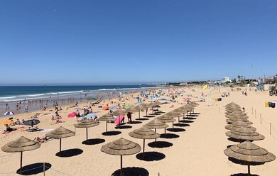

Praias de Lisboa

10 melhores praias de Lisboa
- Praia de Carcavelos
- Praia da conceição
- Costa da Caparica
- Praia de São Pedro
- Praia do Tamariz
- Praia de Santo Amaro de Oeiras
- Praia do Creiro
- Praia do Guincho
- Praia da Adraga
- Praia das Maçâs
Como chegar à Praia de Carcavelos
- Dirija-se à estação de comboios do cais do Sodré em Lisboa
- Apanhe o comboio da CP da linha de cascais com destino a cascais ou oeiras
- Saia na estação de comboios de Carcavelos
- Ao sair da estação,siga pela Avenida Jorge V em direção ao mar
- Atravesse a passagem subterrânea na Avenida Marginal e ande cerca de 10 minutos a pé até chegar à praia
Voltar à página inicial